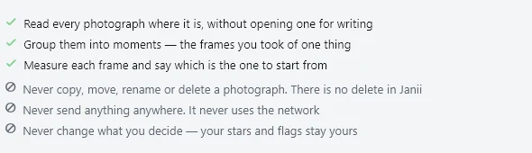

Five thousandwedding frames in.The five hundredworth showing out.
Janii reads a folder of RAW and JPEG photographs from a wedding, on your own Windows PC, works out which moments they belong to, and tells you which frames earn a place, and why. Nothing is uploaded, copied, renamed or deleted.
- Windows, free beta
- offline, no upload
- RAW and JPEG
- CPU only
- a reason on every frame

01
What it does
Two tiers come out of every folder Janii reads: the story, and the memories. Every frame in either one carries a reason, not just a checkmark.
- Story and memories
Story is the best photographs that also cover the day: the handoff-ready set, on the order of five hundred out of five thousand, seeded first with no padding to hit the count. Memories is the story plus enough more that nobody who was actually there is left with zero photographs.
- A reason on every frame
Each photograph is tagged, not just kept or dropped.
- send this one in the story
- your eyes too close to call
- already covered a near duplicate
- only shot once protected
- Moments, not a flat pile
Frames of one thing, close together in time, are grouped into a moment first. A burst of fifteen collapses to the two or three that actually differ; the one frame that is a moment's only record is never called redundant.
- Coverage per person
Janii counts how many times someone has already made it into the story, so a bridal party of ten is not crowded out by whoever posed for every frame, and nobody who was there is quietly skipped.
- The story stops on purpose
The target count comes from your own shoot, and the story carries no guarantee tail. Where a moment has no confident answer, Janii leaves it for you rather than padding the count with a maybe.
- Read-only, always
Janii only ever reads your photographs. Everything it works out lives in one .janii folder beside them; delete that folder and it is as if Janii was never there.
02
Price after the beta
The beta is free today, in full, with no time limit and no feature cut down for it. Once the beta ends, Janii moves to the same subscription plan as ARLing's other paid tools.
- 9 EUR a month, or 79 EUR a year. Planned price once the beta period ends; nothing is charged during the beta.
- 14 days free when it launches. No card needed to keep trying the paid version during that window.
- Offline either way. The paid licence is a signed key with an expiry date, checked on your own machine; Janii still never needs the internet to run.
- Beta testers get the first month free. Anyone who ran the beta on a real wedding and sent feedback gets one month of the paid version at no charge, the owner's decision, not a limited-time trick.
Want first pick when pricing goes live? Say so now, no obligation, no payment today.
Thank you. Noted.
Before you download
Does Janii upload my photographs?
No. Janii never uses the network. Reading, measuring and deciding all happen on your own computer, and photographs are never copied, moved, renamed or deleted.
What if it gets a photograph wrong?
Every tag is a starting position, not a verdict. Star, flag or reject any photograph the way you would in Lightroom; delivery writes sidecars or a gallery from your decisions, not Janii's. It is beta software, so keep your own independent backup of the wedding regardless.
Is there anything to cancel right now?
No. The beta has no account, no card and no obligation. Once the paid subscription above launches, it cancels anytime, the same as ARLing's other tools.
What is actually free?
The beta itself, in full, for as long as the beta programme runs: no feature is cut down for it, and no card or account is needed to download and run it.
03
What it does not do yet
Said plainly, so you know before you download.
- No straightening, cropping or colour grading. Selection only, for now. Janii measures colour but changes no pixel; finish the picked frames in Lightroom, Capture One or Bridge as usual.
- Windows only. No macOS or Linux build exists yet.
- CPU only, no GPU path. A first pass over a big wedding, several thousand RAW files, can run for hours on an ordinary laptop. There is no published benchmark yet, so time it on your own machine before you plan around a number.
- No face recognition yet. The detector and matcher both work in testing, on permissively licensed models, with nothing sent anywhere. Grouping photographs by person waits on the legal question around identifying people (GDPR Article 9), not on a technical one, so the beta does not do it.
- Beta, as is. It can be wrong, it can be slow, and the interface will keep changing before a 1.0. Janii never deletes anything, but keep your own backup of the photographs regardless, and verify that on your own files before you trust a beta with someone's wedding.
04
How to run it
No installer. Unzip, double-click, choose a folder.
- Unzip the whole
Janii-beta-win64folder anywhere on disk. Keepjanii.exe,engine,models,pythonandJanii.batside by side; moving one out of the folder breaks the rest. - Double-click
Janii.bat. Windows will likely show "Windows protected your PC" first, because the build is not code-signed yet: click "More info", then "Run anyway". That warning is expected. - Wait for the green "Analysis engine ready" check, then click "Choose a folder" and point it at your RAW/JPEG folder.
- Wait. A first pass over a big wedding takes a while on CPU (see "What it does not do yet" above). While it works, your photographs are never opened for writing.
- Where results land: everything Janii creates goes into one
.janiisubfolder next to your photographs, plus, once you ask for it, a JPEG preview and an.xmpsidecar per frame that Lightroom, Bridge and Capture One read on import.


05
Download
Beta build, free. One click downloads the file.
Windows
Download Janii for Windows- Windows SmartScreen shows "Windows protected your PC" because the build is not code-signed yet. Click "More info", then "Run anyway".
- Unzip the whole folder and run
Janii.batfrom inside it. Full steps above.
SHA-256 checksum for this beta build's ZIP, to verify your download:a33c3588bda3e4c5207aafaa2e1115485fd9cb980834e3aa640b1e6644651742
06
Stay in the loop
Tell me when a new build lands. New builds and new tools only. No newsletter, no sharing. Reply to any mail to be removed.
Thanks. You will hear from us only when something new is live.
Could not save. Write to andrej@arling.sk.
07
Questions
Which RAW formats does it support?
Everything LibRaw reads through rawpy: Canon CR2/CR3/CRW, Nikon NEF/NRW, Sony ARW/SRF/SR2, Fujifilm RAF, Panasonic RW2, Olympus ORF, Pentax PEF/SRW, Adobe/Leica DNG, plus RAW, RWL, 3FR, FFF, IIQ, MOS, MRW, X3F, ERF, KDC and DCR. JPEG, PNG, TIFF, WebP, BMP and, where the codec is present on your system, HEIC/HEIF/AVIF also read directly. Janii prefers the JPEG preview already embedded in each RAW and only falls back to a full decode when a file has none.
Does it upload my photographs?
No. Janii never uses the network. Reading, measuring and deciding all happen on your own computer, and photographs are never copied, moved, renamed or deleted. Everything Janii creates lives in one .janii folder beside your files.
Why CPU only?
The engine (rawpy, OpenCV, NumPy) has no GPU code path yet, so it runs on whatever CPU is already in your laptop, with no graphics card or driver setup required. The cost is time: a first pass over a big wedding can run for hours, not minutes, and there is no published benchmark yet.
What is story vs memories?
The story is the best photographs that also cover the day: a fixed target count, seeded first, with no padding to reach it. The memories is the story plus enough more that nobody who was actually there is left with zero photographs; that "nobody missing" guarantee belongs to the memories, not the story.
Can I edit the selection?
Yes. Every tag Janii puts on a frame, in the story, only shot once, already covered, is a starting position, not a verdict. Star, flag or reject any photograph the way you would in Lightroom, and delivery writes XMP sidecars or a gallery from your decisions, not Janii's.
How do I send feedback?
Write to andrej@arling.sk with roughly how many RAW files you ran, which camera, and what looked wrong. Anyone who runs the beta on a real wedding and sends feedback gets the first month of the paid version free once it launches (see Price after the beta above).
08
Po slovensky
Janii je desktopová aplikácia pre svadobných fotografov: prezrie priečinok s RAW a JPEG fotkami z jednej svadby, zoskupí ich do momentov a navrhne dve vrstvy výberu. Príbeh (story) sú najlepšie zábery, ktoré zároveň pokrývajú celý deň, na úrovni päťsto z päťtisíc, bez dopĺňania na počet. Spomienky (memories) sú príbeh plus toľko navyše, aby nikto skutočne prítomný neostal bez jedinej fotky. Pri každom zábere je dôvod: poslať tento, potrebuje váš pohľad, už pokryté, alebo jediný záber tejto chvíle. Beží celé na vašom počítači, offline, nič sa nikam neposiela, a Janii fotky nikdy nekopíruje, nepremenúva ani nemaže.
Čo appka zatiaľ nevie: vyrovnanie horizontu, orezanie ani farebný grading (beta je len výber, dokončenie ide cez Lightroom, Capture One alebo Bridge ako doteraz). Beží len na Windows a len na CPU: prvý prechod väčšou svadbou (niekoľko tisíc RAW súborov) môže trvať aj hodiny. Rozpoznávanie tvárí ešte nie je zapojené, kvôli nedoriešenej právnej otázke okolo identifikácie osôb (GDPR čl. 9), nie technicky.
Beta je zadarmo, bez časového obmedzenia. Po skončení bety bude appka na predplatné: 9 € mesačne alebo 79 € ročne, prvých 14 dní zadarmo, rovnako ako pri ostatných platených nástrojoch ARLing. Appka ostáva offline aj potom, licenčný kľúč s platnosťou sa overuje bez internetu. Fotografi, ktorí appku vyskúšajú na reálnej svadbe počas bety a pošlú spätnú väzbu, dostanú prvý mesiac platenej verzie zadarmo. Napíšte na andrej@arling.sk s tým, na koľkých RAW súboroch ste to skúsili a čo nesedelo.
Free beta today, no time limit. Windows, offline, a reason on every frame.